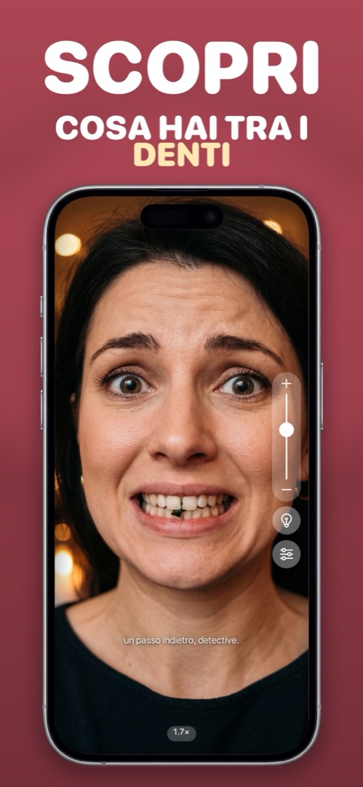

Come controllare se hai cibo tra i denti quando non c’è uno specchio
Spinaci, semi di papavero, un grano di pepe nero: si nascondono esattamente dove non li senti, e chiunque ti parli nella prossima ora li vedrà. Ecco come controllare in pochi secondi, ovunque tu sia.
I trucchi rapidi ma imperfetti
- Passata di lingua: passa la lingua con decisione sul davanti dei denti superiori e inferiori. Prende le cose grosse, manca ciò che è appiattito sullo smalto o tra i denti.
- Sorso d’acqua: una bella sorsata agitata con energia stacca quasi tutto ciò che è libero. Ma non ti dice se ha funzionato.
- Chiedere a qualcuno: affidabile, se non ti dispiace mostrare i denti a un collega.
- Lo schermo spento del telefono: il riflesso della schermata di blocco è troppo scuro per vedere tra i denti.
Il metodo affidabile: fotocamera frontale, con zoom e ben illuminata
La fotocamera frontale del tuo iPhone a 1,5–2× di ingrandimento, con la luce sul viso, mostra più di uno specchio del bagno: vedi tra i denti e lungo la gengiva. L’app Fotocamera può farlo, ma finirai con una foto dei tuoi denti stretti in libreria. Un’app specchio lo fa senza salvare nulla.
Cosa cercare
Sorridi ampiamente, poi solleva il labbro superiore e abbassa quello inferiore. Controlla tra i sei denti davanti, lungo la gengiva e agli angoli della bocca (lì si accumulano rossetto e salsa). Dieci secondi, fatto.
Prevenzione, per la prossima volta
Tieni degli stuzzicadenti con filo interdentale in borsa o nel cassetto della scrivania e bevi acqua a pranzo. Verdure a foglia, semi e qualsiasi cosa con le erbe aromatiche sono i soliti colpevoli.
Come farlo in Mirrorly
In Mirrorly, l’intero controllo richiede circa dieci secondi:
- Apri Mirrorly: è subito uno specchio a schermo intero.
- Trascina il cursore dello zoom fino a circa 2× (o pizzica).
- Tocca la lampadina se la stanza è buia, così vedi tra i denti.
- Sorridi ampiamente, controlla sopra e sotto, e gli angoli della bocca.
- Chiudi l’app. Non esiste da nessuna parte una foto dei tuoi denti. (Aspettati però un commento dello specchio: «un passo indietro, detective.»)

Mirrorly è gratis da provare sull’App Store. Uno specchio a schermo intero per iPhone con luce ad anello, zoom e luminosità al massimo. Tre controlli gratuiti, poi un acquisto una tantum: niente abbonamento, niente foto salvate, niente account, niente pubblicità.